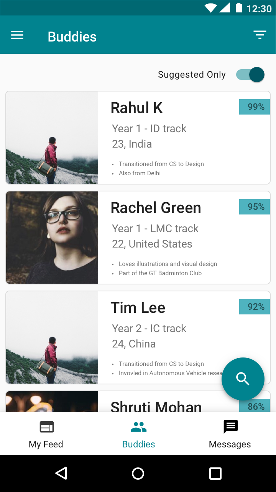

Evaluation
Overall Feedback
Due to time constraint, I could not conduct comprehensive usability testing for SuperBud. However I let two of the interview participants try out the prototypes and they reacted very positively with the overall concept.
The feed is interesting and would love to keep up with important deadlines and fun work by everyone else in one place! But should not feel like information overload
The mentorship assistant is very promising. I’d like to see more fleshed out version of this.
Both participants raised Privacy concerns
One UI tweak
Users didn’t understand what just “XX%” number mean on the recommendation card. Upon conveying the meaning, one user said I’d like to see that number while the other said the number doesn’t matter at all and she expected results to be in decreasing order of match by default. I added label instead of removing the number, but more testing required

Before

After